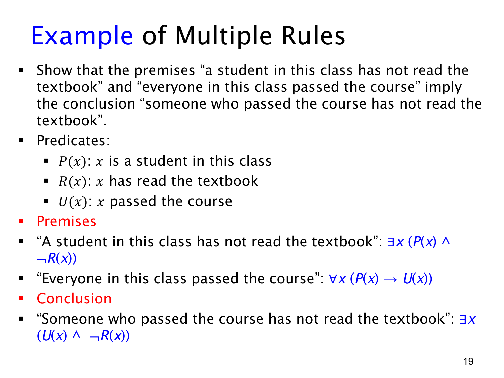

L1.3 · 第 19 页讲解原文
查看这一页课件

多条谓词规则的例子：先整理前提与目标
题目说：“这门课有一位学生没读过教科书”，又说“这门课每位学生都通过了课程”，要推出“有一位通过课程的人没读过教科书”。本页先定义谓词并把三句话形式化，为后续证明准备。
令 P(x) 表示“x 是这门课的学生”，R(x) 表示“x 读过教科书”，U(x) 表示“x 通过了课程”。把人作为共同论域，则两个前提是
∃x(P(x)∧¬R(x)),∀x(P(x)→U(x)).
第一式使用存在量词与合取：要找到同一位既是本课学生又没读过书的人。第二式使用全称量词与蕴含：所有人中，只要是本课学生，就必须通过课程；不是本课学生的人不受这条要求约束。
目标结论是
∃x(U(x)∧¬R(x)).
它只要求找到一位通过课程且没读过书的人，不要求此人在结论里显式写成“本课学生”；前提会保证所找到的见证确实属于本课。
证明的核心思路是沿用第一前提给出的那位学生作为同一个见证。对他或她实例化第二前提，得知其已通过课程；未读书的性质也一直保留，于是能合成结论所需的两个性质。不能把“有一位没读书的学生”和“有一位通过课程的人”当作两个互不相关的见证来草率合并；这里依靠全称前提把第一位见证也推成通过者。